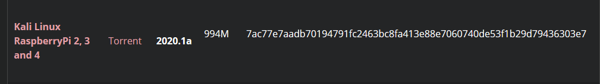
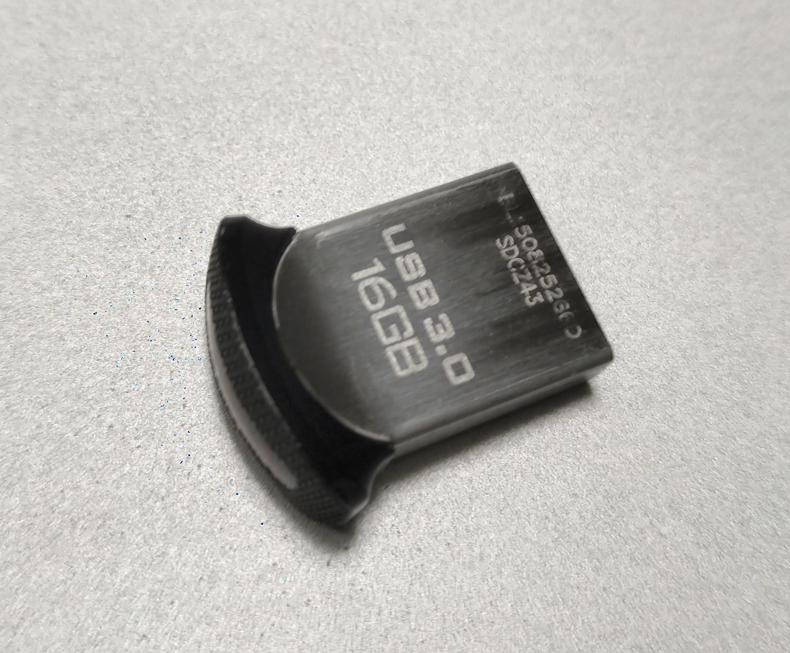
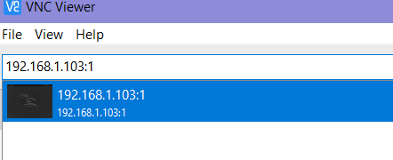
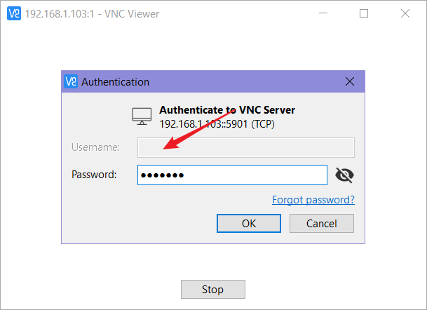

前言
手头有一个raspi,一直在吃灰.最近打算弄个Kali来用用.
我打算用U盘取代内存卡来安装系统,听说内存卡突然断电很容易损坏.Kali学得好,监狱进得早
从U盘启动系统
查看树莓派得型号,貌似只有一些比较晚生产的型号可以从U盘启动.具体请Google
$ cat /sys/firmware/devicetree/base/model
Raspberry Pi 3 Model B Rev 1.2r先用内存卡刷入官方的系统,用没有桌面环境的包就行.启动系统之后,在命令行输入
$ echo program_usb_boot_mode=1 | sudo tee -a /boot/config.txt
//该命令在终端执行，会在config.txt末尾添加program_usb_boot_mode=1然后,重启系统.再次进入系统之后,输入如下命令确认
$ vcgencmd otp_dump | grep 17:
并显示如下信息，表示成功打开
17:3020000a之后,去kali官网下载arm版本的系统,

按照刷入内存卡的方法在U盘刷入系统,推荐使用rufus
注意,U盘尽量选择好一点

U盘刷好系统后, 用一台linux系统的机器挂载U盘,我们需要修改两个文件
/boot/cmdline.txt
root=/dev/sda2
(我这里是 sda2)/etc/fstab
将 /dev/mmcblk0p1 改为 /dev/sda1
将 /dev/mmcblk0p2 改为 /dev/sda2
之后,将U盘插入你的树莓派,等待系统启动即可
听说树莓派4不需要怎么麻烦了,但是价格还是太高了(lll￢ω￢)
启动 ssh | vnc
服务端
每次给树莓派重装系统之后,最反感的就是要接显示器和键鼠,要是遇上手头没有这些东西,简直抓狂反人类.
所以,Kali的系统就很好了,预先开启ssh,只要有网线,接上路由器,获取ip直接远程登录即可.
注意: Kali默认的登录账号 root. 默认密码 toor (还是很好记的)
新的版本账号密码都为 kali, 如果不确定，自己 Google 一下就行
ssh之后,就是开启vnc. vnc已经预安装了,我们启动就行
http://blog.sevagas.com/?VNC-to-access-Kali-Linux-on-Raspberry-Pi
按照如下步骤
Install TightVNC server package:
apt update apt-get install tightvncserver (我这里情况是执行这命令,提示已经安装)Install Autocutsel package to enable cut&paste between client and server:
apt-get install autocutselWe will make a first run of VncServer to generate configuration files and VNC password.
vncserver :1这一步会让你输入一个远程登录的密码,不同于的root账号的密码,切记
查看服务开启的情况,可以看到5901和6001端口已开启
Port 5901 is VNC connection port, 6001 is X server for VNC.netstat -nptl配置 cut 和 paste 的自启动功能
目前在我的树莓派不生效……编辑你 root 目录下面的这个文件
~/.vnc/xstartup
增加如下内容,如有重复,记得删除#!/bin/sh xrdb $HOME/.Xresources xsetroot -solid grey autocutsel -fork # Fix to make GNOME work export XKL_XMODMAP_DISABLE=1 /etc/X11/Xsession到这一步基本都完成，如果你远程后，是一个灰色的页面，只有一个 X 形状的光标，那请修改上面的配置文件为
#!/bin/sh unset SESSION_MANAGER unset DBUS_SESSION_BUS_ADDRESS startxfce4 & [ -x /etc/vnc/xstartup ] && exec /etc/vnc/xstartup [ -r $HOME/.Xresources ] && xrdb $HOME/.Xresources xsetroot -solid grey autocutsel -fork vncconfig -iconic &
客户端
到这里,服务端已经搞定.我这边客户端时Windows,就下载了一个vnc viwer
在输入栏输入 192.168.1.103:1
192.168.1.103 是我树莓派的ip, 不要忘记后面的 :1

输入账号: root （有些情况不需要，如下图，只需密码）
密码: 你设置服务端时新设置的密码

然后愉快的 搞破坏 玩耍吧
重置 VNC 密码
有时候太久没用，忘记 VNC 的连接密码，可以用下面的方法重置
找到当前用户的 home 文件夹，有个
.vnc的隐藏文件
cd /root/.vnc/强制移除里面的 passwd 文件
rm -rf passwd命令行输入
vncserver，重新设置密码
其他
这里附上树莓派的一些使用技巧
修改 分辨率
hdmi_group=2 //将显示模式切换成dmt （显示器模式）
hdmi_mode=82 // 1920*1080 60HZ
hdmi_drive=2 //HDMI 模式打开配置界面
raspi-config
安装输入法
apt-get -y install ttf-wqy-zenhei 安装中文字体
apt-get -y install scim-pinyin 安装输入法
apt-get命令中的“-y”参数，用处是免“确认安装吗？[Y/n]”一步，直接安装。可以不加。
有些教程推荐ibus输入法。树莓派跑ibus太慢，建议别用。老实一点用scim最好。
http://www.guokr.com/post/520901/
dpkg-reconfigure keyboard-configuration 键盘配置
~/.config/openbox/lxde-rc.xml
自定义快捷键
默认目录作用
boot： 包含了启动树莓派需要的 Linux 内核和其他软件包
bin：操作系统中相关的二进制文件
dev： 虚拟目录，实际上并不存在于sd 卡上。所有设备连接到系统，可以从这里访问。
etc： 存储配置文件。
home：
lib：用来存储不同应用程序所需代码共享的库文件
lost + found ：当系统崩溃时，存储丢失文件碎片的目录
media：可移动存储设备目录。
mnt： 用于手动挂载的存储设备。
opt：用来存储不是操作系统本身自带的软件。安装到树莓派的新软件如不在usr 目录下，通常会在这里。]
proc：虚拟目录，包含正在运行的程序信息。
selinux: Linux 内核中提供的强制媒体访问控制（MAC）的安全系统。
sbin：存储特殊二进制文件的目录。
srv：用于存放操作系统服务数据的目录。
sys：虚拟目录，用于存放被Linux 内核所使用的系统信息。
tmp：临时文件
usr：提供存储用户访问的程序。
var ：虚拟目录，用于存储程序运行时改变的值或变量。
网络
Link encap ：网络所使用的封装类型。
Bcast ：树莓派所在网络的广播地址。
RX ：收到网络流量情况，包括错误以及丢包情况。如果这里有错误，表明网络存在问题。。
TX ：发送数据包。
collisions：如果两个系统在网络上尝试在同一时间发送消息，将会发生碰撞，这要求他们重新发送数据包。
RX bytes 和 TX bytes ：网络接口传送数据总量。
ifdown eth0
ifup eht0
开启和关闭 网络端口。
Linux 内核是一个位于/boot 目录下名为kernel.img 的文件，紧急内核是同位于/boot 目录下的另一个文件，名为kernel_emergency.img.
/etc/network/interfaces dhcp 配置
/etc/resolv.conf DNS 配置
格式 ：
nameserver 8.8.8.8
内核缓冲区是一个专用于 Linxu 内核存放用户可读信息的内存区域。因为Linux 启速度非常快， 屏幕上的内容一闪而过，将启动过程输出的信息存放在内核缓冲区中，在需要的时候用户可以查看里面的信息。
命令：dmesg ^ 匹配行首字符
iwlist scan 扫描无线接入点。
iwconfig 无线网络专用
网卡模式（mode）
Managed - 常规无线网络模式，连接到AP。
Ad-Hoc - 设备到设备无线网络，无AP。
Monitor - 监听网络传输的特殊模式，常用于网络差错。
Repeater - 增强网络信号的中继模式。
Secondary - Repeater 模式中的一种，此时网卡作为备用中继器使用。
Tx-Power： 无线网卡的传输功率， 数字越大表示信号越强。
树莓派静态ip
1、使用ssh登陆，使用以下命令设置静态ip。
sudo nano /etc/dhcpcd.conf
2、在dhcpcd.conf后添加以下内容：
interface eth0
static ip_address=10.12.8.124/24
static routers=10.12.8.1
static domain_name_servers=202.102.152.3 114.114.114.114
3、保存后重启树莓派。
sudo reboot
作者：科技爱好者
链接：https://www.jianshu.com/p/b0e6d066d6b6
來源：简书
著作权归作者所有。商业转载请联系作者获得授权，非商业转载请注明出处。
config.txt
arm freq : cpu 的核心时钟频率。 默认700 mhz
gpu freq ：GPU 的时钟频率。默认为250MHz
sdram_freq : 设置RAM芯片的时钟频率，默认频率为400MHz。
gpu_mem=16 设置gpu 内存